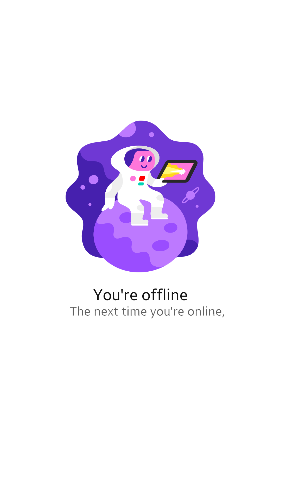

<!--
  Generated template for the RhlynkOffrePage page.

  See http://ionicframework.com/docs/components/#navigation for more info on
  Ionic pages and navigation.
-->
<ion-header>

  <ion-navbar color="secondary">
    <!-- <button ion-button menuToggle>
        <ion-icon name="menu"></ion-icon>
    </button> -->
    <ion-title *ngIf="!open">Liste des Offres</ion-title>
    <ion-buttons *ngIf="!open" end>
        <!-- <button (click)="openCreateOffre()" ion-button icon-only>
          <ion-icon name="add-circle"></ion-icon>
        </button> -->
        <button (click)="openSearch()" ion-button icon-only>
          <ion-icon name="search"></ion-icon>
        </button>
    </ion-buttons>
    <ion-toolbar *ngIf="open" color="secondary">
      <ion-searchbar (input)="getItems($event)" (ionClear)="initializeItems()"></ion-searchbar>
    </ion-toolbar>
  </ion-navbar>

</ion-header>


<ion-content (click)="closeSearch()" padding auto-hide>
    <div class="container" *ngIf="!offline">
        <ion-list no-lines>
            <ion-item *ngFor="let offre of offres">
              <ion-icon ios="ios-albums" md="md-albums" item-start></ion-icon>
              <h2>{{ offre.titre }}</h2>
              <p>{{ offre.proprietaire.username }} • {{ offre.createAt }}</p>
              <button ion-button color="dark" (click)="goToOffreDetail(offre)"  item-end> <ion-icon name="md-eye"></ion-icon></button>
            </ion-item>
          </ion-list>
          <ion-infinite-scroll *ngIf="!last && dontref" (ionInfinite)="loadContents($event)" >
              <ion-spinner class="ion-spinner" name="bubbles"></ion-spinner>
            <!-- <ion-infinite-scroll-content></ion-infinite-scroll-content> -->
          </ion-infinite-scroll>
    </div>
    <ion-fab bottom right>
      <button color="secondary" (click)="openCreateOffre()" ion-fab #fab>
        <ion-icon name="ios-add-outline"></ion-icon>
      </button>
    </ion-fab>
    <div *ngIf="offline" >
      
    </div>
</ion-content>
